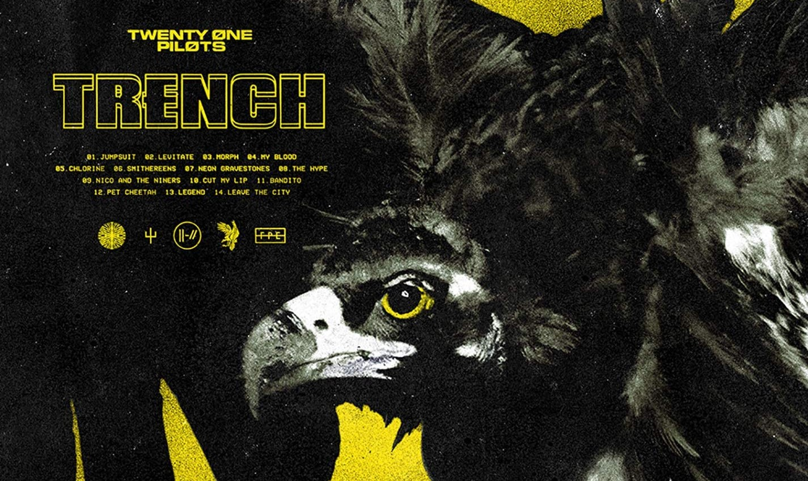

Músicas

CHLORINE
Lyric
So where are you? It's been a little while
Sippin' on straight chlorine, let the vibes slide over me
This beat is a chemical, beat is a chemical
When I leave don't save my seat, I'll be back when it's all complete
The moment is medical, moment is medical
Sippin' on straight chlorine
Lovin' what I'm tastin'
Venom on my tongue
Dependant at times
Poisonous vibration
Help my body run
I'm runnin' for my li-i-i-i-i-i-fe
Runnin' for my li-i-i-i-i-i-fe
Sippin' on straight chlorine, let the vibes slide over me
This beat is a chemical, beat is a chemical
When I leave don't save my seat, I'll be back when it's all complete
The moment is medical, moment is medical
Sippin' on straight chlorine
Fall out of formation
I plan my escape from walls they confined
Rebel red carnation
Grows while I decay
I'm runnin' for my li-i-i-i-i-i-fe
Runnin' for my li-i-i-i-i-i-fe
Yeah, I'm runnin' for my li-i-i-i-i-i-fe
Runnin' for my li-i-i-i-i-i-fe
Had you in my coat pocket, where I kept my rebel red
I felt I was invincible, you wrapped around my head
Now different lives I lead, my body lives on lead
The last two lines may read incorrect until said
The lead is terrible in flavor
But now you double as a papermaker
I despise you sometimes
I love to hate the fight and you in my life is like
Sippin' on straight chlorine, let the vibes slide over me
This beat is a chemical, beat is a chemical
When I leave don't save my seat, I'll be back when it's all complete
The moment is medical, moment is medical
Sippin' on straight chlorine
Let the vibe, let the vibe
Let the vibe, let the vibe
Beat is a chemical, yeah
Let the vibe, let the vibe
Let the vibe, let the vibe
Moment is medical, yeah
Sippin' on straight chlorine
Let the vibe, let the vibe
Let the vibe, let the vibe
Beat is a chemical, yeah
Let the vibe, let the vibe
Let the vibe, let the vibe
Moment is medical, yeah
I'm so sorry, I forgot you
Let me catch you up to speed
I've been tested like the ends of
A weathered flag that's by the sea
Can you build my house with pieces?
I'm just a chemical
Can you build my house with pieces?
I'm just a chemical
Can you build my house with pieces?
I'm just a chemical
Can you build my house with pieces?
I'm just a chemical